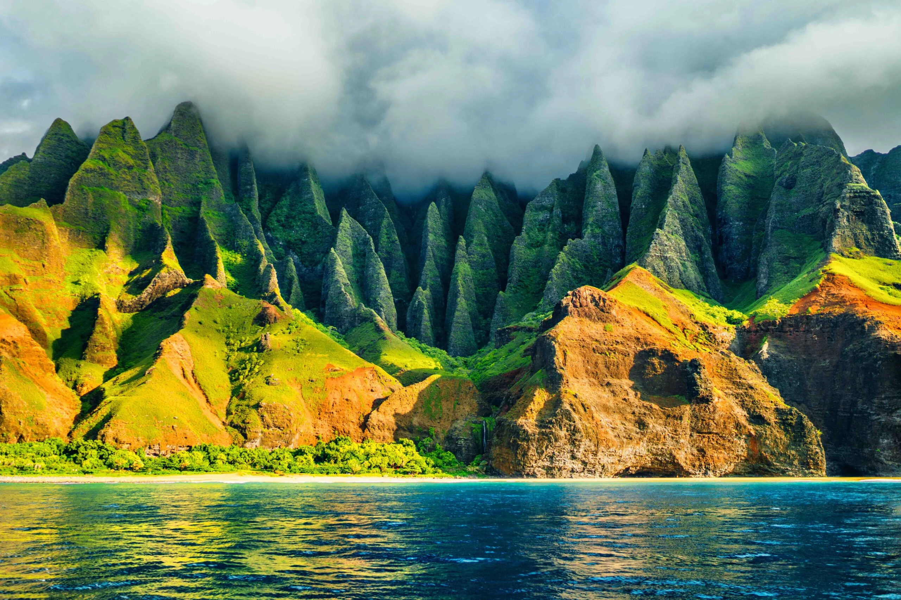
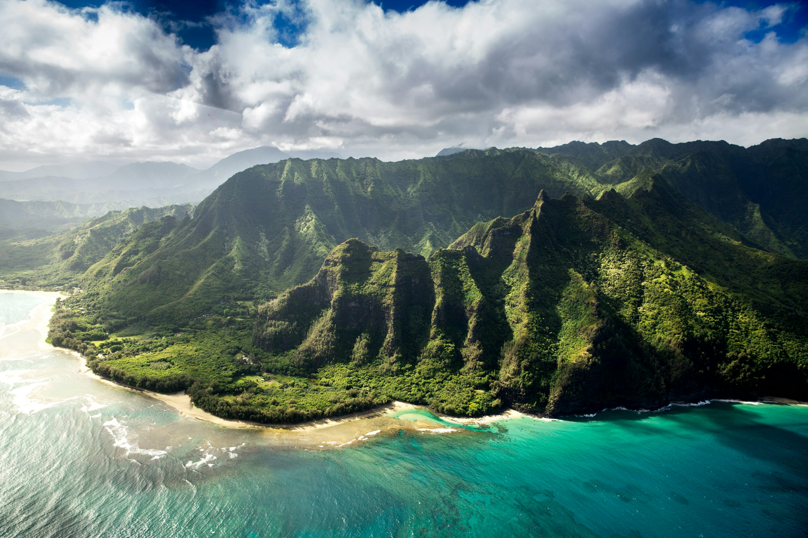

Images
 Kauai, known as the "Garden Isle," is famous for its lush landscapes, dramatic cliffs, and beautiful beaches. Popular attractions include the Na Pali Coast, Waimea Canyon (often called the "Grand Canyon of the Pacific"), and numerous waterfalls. It's a great destination for hiking, kayaking, and exploring nature.